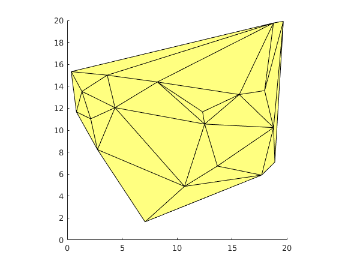

mesh2poly
| main | Tutorials | Functions | website |
Converts an element mesh to a shapefile structure variable.
Version : 1.0
Author : George Kourakos
email: gkourakos@ucdavis.edu
web : https://gwt.ucdavis.edu/research-tools-and-applications/msim
Date : 30-Aug-2019
Department of Land Air and Water
University of California Davis
Contents
Usage
S = mesh2poly(p, msh)
or
S = mesh2poly(p, msh, props, nameprops)
Input:
p : [Np x 2] matrix that holds the coordinates of the element nodes.
msh : [Nel x 3 or 4] contains the connectivity ids.
props: [Nel x Nprop] (optional) contains property values for each mesh element
nameprops: (optional) is a cell variable with the names of the properties. The lenght of this variable is Nprop.
Output
S : A shapefile structure variable
Example without properties
Generate 20 random 2D points within the [20 20] rectangular area.
p = 20*rand(20,2);
Generate a mesh by triangulating the points
msh = delaunay(p(:,1), p(:,2));
Write the mesh to a structure without any properties other than the default.
S = mesh2poly( p, msh)
Keep in mind that the size and shape of the triangles will be different each run.
S =
30×1 struct array with fields:
Geometry
X
Y
Example with properties
Lets first generate a couple of properties. First we will genrate a random id for each element
Nel = size(msh,1); prop = randperm(Nel)';
We will add two more properties commonly used in groundwater modeling. The first is hydraulic conductivity and groundwater recharge. Just for demontration purposes we will assign random values
prop = [prop 50*rand(Nel,1) 0.0004*rand(Nel,1)];
Last we will need to assign names for those fields
nameprop = {'ID', 'Cond', 'GWrch'};
S = mesh2poly( p, msh, prop, nameprop)
If the maping toolbox is available then the following command can be used to display the content of the structure.
mapshow(S);
This structure can then be used by shapewrite to write the structure into a shapefile.
S =
30×1 struct array with fields:
Geometry
X
Y
ID
Cond
GWrch
